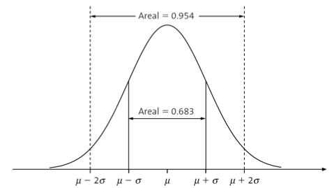
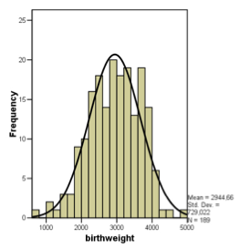
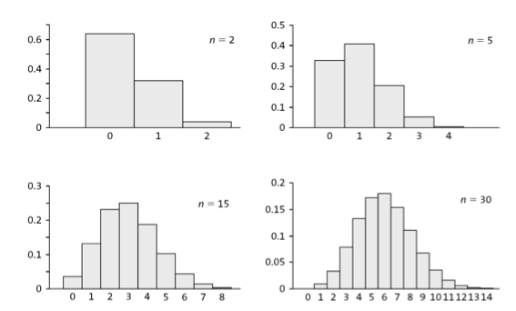

Probability Distributions
Topics:
Discrete probability distribution
Binomial distribution
Continuous probability distribution
Normal distribution
Normal approximation to a binomial distribution
Central Limit Theorem
Books and resources:
Aalen 4, 5
Kirkwood and Sterne 5, 6, 15.1-15.2
Discrete probability distribution
Here we deal with stochastic trials where the set of all possible outcomes is countable and known.
A discrete random variable maps each of the trial outcomes to a numeric value.
A discrete probability distribution assigns a probability for each of the possible numeric values representing the outcomes.
All possible outcomes for a probability distribution should sum to 1.
Trowing a dice has 6 possible outcomes with equal probability. We can define a random variable \(X\) that maps each of the outcomes when trowing a dice to the numeric values 1,2,3,4,5,6. The probability distribution \(P(X=x)\) assigns the following probabilities to each value \(X=x\):
| \(x\) | 1 | 2 | 3 | 4 | 5 | 6 |
|---|---|---|---|---|---|---|
| \(P(X=x)\) | 1/6 | 1/6 | 1/6 | 1/6 | 1/6 | 1/6 |
Bernoulli trials
Often a process has two outcomes.
Coin tossing: outcomes are head or tail.
HIV test looks for the presence or absence of antibodies in the blood.
A child is born with a certain condition or not.
Or from a stochastic trial with multiple outcomes, there are two outcomes of interest:
throw a dice, you are only interested in whether you get a 6 or not.
A child is born with a weight lower than 2500 grams or not.
Binomial trials
A bionomial trial consist of a series of Bernoulli trials that satisfy the following:
In each trial, we can record whether certain event \(A\) occurs or not.
The probability of A, \(P(A)\) is the same in each trial, it is denoted by \(p\).
All trials are independent.
Suppose we carry out n trials, looking for an event A in each trial. As a result we obtain a sequence:
\[A, \bar{A}, A, A, \bar{A}, ..., A\]
Say that \(A\) takes place \(x\) times. This means \(\bar{A}\) takes place \(n-x\) times.
What is the probability for a certain sequence?
Recall that probabilities for independent events can be multiplied.
\[P(sequence) = p \times (1-p) \times p ... \times p\]
For \(x\) number of \(p\) and \(n-x\) number of \(1-p\),
\[P(sequence) = p^{x} (1-p)^{n-x}\]
The order of the sequence does not matter. The number of occurence matters. The number of ways that \(x\) objects can be chosen from a total of \(n\) objects, regardless of order is given by the bionomical coefficient.
Binomial coefficient
We want to find the number of ways that \(x\) objects can be chosen from a total of \(n\) objects, regardless of order
Binomial coefficient: \(\binom nx\)
\[\binom nx = \frac{n!}{x!(n-x)!}\]
“x factorial”: \(x! = x \times (x-1) \times ... 2 \times 1\)
Example: \(\binom 4 3 = \frac{4\times 3 \times 2 \times 1}{3 \times 2 \times 1 \times 1} = 4\)
Binomial distribution
The probability that the event \(A\) occurs exact \(x\) times is given by:
\[P(X = x) = \binom n x p^{x}(1-p)^{n-x}\]
i.e. the number of distributing \(x\) events \(A\) in a sequence of length \(n\), times the probability that one particular sequence with \(x\) events \(A\) occurs.
For a binomial distribution, the mean (or expected value) is \(np\) and the variance is \(np(1-p)\).
Let’s say \(p=0.15\) is the probability that a person taking a test for a certain disease gets a positive result. A certain day, we are going to do \(n=8\) such tests. The number of positive test in a sequence of of 8 test is random variable that is binomially distributed, often written Binom(8,0.15). This binomial distribution is represented below.

- What is the probability that you get 2 or more positives out of 8?
- What is the expected number of positive tests (the mean)?
\[ \text{mean} = 8*0.15 =1.2 \]
- What is the variance and the standard deviation?
\[ \text{variance} = 8*0.15-0.85=1.02 \]
\[ \text{sd} = \sqrt{1.02}=1.01 \]
We consider a family with 4 kids, with no monozygotic twins, so the gender of the kids are approximately independent. The probability of getting a boy in Norway is approximately 0.514. Using the formula for the binomial distribution we can compute the probability that that out of the 4 kids the number of boys is 0, 1, 2, 3 or 4 as follwos:
\[ P(X=0)=\binom 4 0 0.51^0 \cdot 0.486^4 = 0.0557 \]
\[ P(X=1)=\binom 4 1 \cdot 0.51^1 \cdot 0.49^3 = 0.2360 \]
\[ P(X=2)=\binom 4 2 \cdot 0.51^2 \cdot 0.49^2 = 0.3744 \]
\[ P(X=3)=\binom 4 3 \cdot 0.51^3 \cdot 0.49^1 = 0.2639 \] \[ P(X=4)=\binom 4 4 \cdot 0.51^4 \cdot 0.49^0 = 0.0697 \]
In the following table we compare our theoretical estimates with real-life percentage distribution in 7745 American families with 4 kids.
| Number of boys | Binomial distribution (\(\%\)) | Observed distribution (\(\%\)) |
|---|---|---|
| 0 | 5.6 | 5.3 |
| 1 | 23.6 | 22.9 |
| 2 | 37.4 | 38.3 |
| 3 | 26.4 | 26.5 |
| 4 | 7.0 | 6.9 |
Continuous probability distribution
Here we deal with continuous stochastic variables. In contrast to counting variables, continuous variables can take any (of the infinite) values within a given range. For instance, height, cholesterol and annual salary can be considered continuous variables.
A probability distribution (or density) for a continuous variable \(X\) is a function \(f\) satistying the following:
- \(f(x)\geq 0~~\text{for all}~~x~~\text{in}~~X\).
- The total area under the curve of \(f\) is 1.
- The probability that \(x\) is between two values \(a\) and \(b\), denoted \(P(a\leq x \leq b)\) equals the area under the curve from \(a\) to \(b\).

Normal distribution
This is the most important probability distribution in statistics. It will be widely used in this course.
Probability density function of the normal distribution has this formula:
\[f(x) = \frac{1}{\sigma \sqrt{2\pi}} \text{exp}(- \frac{(x-\mu)^2}{2\sigma^2})\]
\(\mu\) is the mean
\(\sigma\) is the standard deviation
\(\text{exp}(x) = e^{x}\)
Properties of the normal distribution

Symmetric, bell-shape
\(\mu\) and \(\sigma\) define the location and variation
From the center (mean), going two standard deviations each way covers approximately 95% of the distribution

Standard normal distribution
A normal distribution \(N(\mu, \sigma)\) with \(\mu = 0, \sigma = 1\)
Any normal disribution can be transformed into a standard normal distribution \(N(0, 1)\) by substracting the meand and dividing by the standard deviation:
if \(X \sim N(\mu, \sigma)\), then \(Y = \frac{X-\mu}{\sigma} \sim N(0, 1)\).
Standard normal distribution probabilities are commonly presented in tables, so people can check them easily. But in this course we will learn how to compute them with R.
This figure shows the birthweight of 189 newborns

Estimates of \(\mu\) and \(\sigma\) are, respectively, 2945g and 729g.
How can we compute the proportion of weights larger than 4000g?
We can either compute it directly in R as we will see in the R lab, or we can use the normal tables as follows:
\[ P(Y>4000) = 1- P(X \leq 4000) = 1 - P(\frac{X-2945}{729} \leq 1.45) \]
As the variable \(\frac{X-2945}{729}\) is distributed according to the standard normal distribution, the probability \(P(\frac{X-2945}{729} \leq 1.45)\) can be found in the tables, see Aalen p.328.
\[ \begin{aligned} P(Y>4000) & = 1- P(X \leq 4000) = 1 - P(\frac{X-2945}{729} \leq 1.45)\\ & = 1 - 0.9265 = 0.0735 \end{aligned} \]
Normal approximation to the binomial distribution
Recall the binomial distribution,
\[P(X = x) = \binom nx p^x (1-p)^{n-x}\]
where \(\binom nx = \frac{n!}{x!(n-x)!}\), and \(\binom n 0 = 1\)
For large \(n\), the binomial distribution can be approximated by the normal distribution.

To approximate a binomial distribution we use a normal distribution with:
\(\mu = np\)
\(\sigma = \sqrt{np(1-p)}\)
\(n=20\), \(p=0.514\)
\(\mu=np=20 \cdot 0.514 = 10.28\)
\(\sigma = \sqrt{np(1-p)} = \sqrt{20 \cdot 0.514 \cdot 0.486} = 2.24\)
\(N(10.28,2.24)\)

Rule of thumb:
\(Binom(n, p) \rightarrow N(\mu, \sigma)\quad \text{for} \quad n \rightarrow \infty\) if \(np \geq 5\) and \(n(1-p) \geq 5\)
Central limit theorem CLT
CLT in simple words: the distribution of sample mean will be nearly normal regardless of what distribution the variable in the population is, as long as the sample size is large enough.